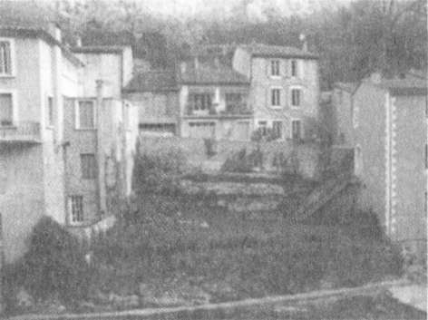
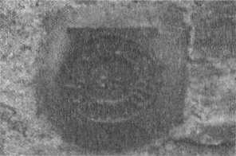

Carcassonne'a kadar hiçbir yere sapmadan yol aldı, otuz dakika sonra Mirepoix ve Limoın üzerinden geçmek için otoyoldan ay-rıldı. Couiza'da sola, Aıques tarafına döndü, dönemeçti yolda on dakika gidip tekrar sağa saptı. Saat altı olduğunda beklenti ve heyecanı artmıştı; bunca zamandır hep aklında olaıı kasabaya neredeyse ulaşıyordu.
Ormanlar ve uçurumlardan sonra DI4 Karayolu kayalardan oluşan bir duvarın yanından ilerler. Büyük termal kaplıca binasının karşısında otoparklar vardır. Buradan başlayıp Meredith'in ayak izlerini takip ederek dik bir yokuştan Allee des Bains de la Reine'e ve Salz Nehri kıyısındaki mineral zengini sıcak kaplıca suyunun kaynadığı açık yüzme havuzuna inebilirsiniz. Ne var ki, Meredith ziyarete gittiğinde kaplıca kapalıydı. Yüz yıl kadar önce Leonie de aynı yoldan yürümüş, zengin hastaları ve onları ellerinde havlularla bekleyen uşaklarını görmüştü.
660

Tapınak
10. Karşı Yaka
Karşı yakanın atmosferi çok farklıydı... insanlardan ya da modadan etkilenmeyen daha dayanıklı bir ortamda bulundu-
ğunu hissetti. Yontulmamış, sivri tepeler tam önünden dimdik yükselmeye başlıyordu. Çalıların ve ağaçların alacalı yeşilleri, kahverengileri, bakır renkleri günbatımının renklerini taşıyordu.
Çekici olması gerekirken her nasılsa insanı rahatsız eden bir manzaraydı. Esas karakteri boyalı yüzeyin altına gizlenmişti ve sanki ikiboyııtluymuş gibi görünüyordu.
Nehrin kıyısında bir süre
ilerledikten sonra sola dönüp
Meredith'in suyun içinde "çağ-
daş Ophelia" diye tanımladığı
bir yüz gördüğü alçak beton
köprüye ve ana yağmur boru-
suna kadar yürüyebilirsiniz.
Öteki tarafa dönüp "yüzme
havuzunun beton tabanının"
yanından geçince, dar yüksek
binaların oluşturduğu yapay uçurumu göreceksiniz. Yoldan bakınca alçak gibi görünen binaların nehir kenarında iki, hatta üç katı suya doğru alçalır.
Biraz daha ileride, karşı kıyıda, Pont de Fer denilen demir, yaya köp-rüsünün yakınında büyük pembe binanın temelleri arasında küçük bir sıcak kaynak suyu havuzu vardır. Kış.ın termometre sıfır dereceyi gösterirken bile insanlar yüzeyden anlaşılmaz biçimde yükselen buhar arasında yüzüyorlar.
661

Kate Mosse